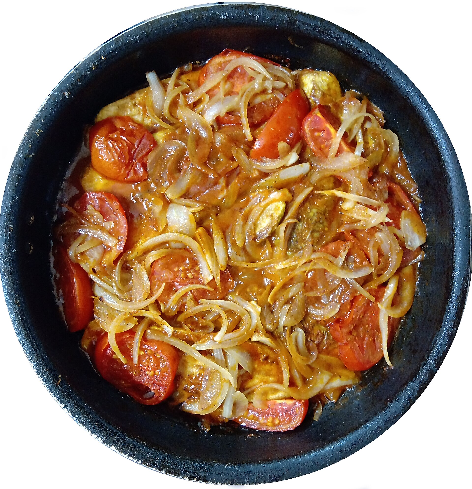

Pollo guisado con calabacín

🖨️ Descargar receta en PDF · A4👁️ Más de Guisos y asados
Ingredientes
- 500–600 g pollo troceado (preferiblemente contramuslos deshuesados)
- 1 unidad cebolla (mediana, unos 150 g)
- 2 unidades zanahorias (unos 150 g)
- 1 unidad calabacín (unos 250 g)
- 300 g tomate triturado
- 2 dientes ajo
- 50–75 ml vino blanco seco
- 2–3 cucharadas aceite de oliva virgen extra
- 0.5 cucharadita pimentón dulce
- 1 hoja laurel
- tomillo (opcional)
- sal y pimienta negra (al gusto)
- agua o caldo de pollo (solo si hace falta)
Preparación
Seca bien el pollo, córtalo en trozos de unos 4 cm y salpimienta. Calienta la olla de acero inoxidable con aceite a fuego medio-alto. Dora por tandas, 2-3 min por lado, sin mover antes de que se despegue. Retira a un plato con sus jugos. No hace falta cocinarlo por dentro todavía.
Córtalo en medias lunas gruesas (1,5 cm). Si el fondo conserva restos dorados, no negros, saltea brevemente a fuego medio-alto, buscando algo de color sin ablandarlo. Retira y reserva. Si los restos del pollo amenazan con quemarse, omite este salteado y desglasa inmediatamente.
Baja el fuego y deja perder calor a la olla. Vierte 50-75 ml de vino blanco, rasca los restos marrones con una espátula de madera y reduce aproximadamente a la mitad. No recuperes residuos negros o de olor quemado.
Añade la cebolla picada, una pizca de sal y algo más de aceite si hace falta. Sofríe a fuego medio-bajo. Incorpora la zanahoria en medias lunas finas (3-4 mm) y cocina hasta completar 10-12 min, removiendo. Agrega el ajo picado el último minuto. Si se pega, añade una cucharada de agua.
Incorpora el pimentón, remueve unos 10 segundos y añade enseguida el tomate triturado, el laurel y, si quieres, tomillo. Cocina destapado a fuego medio-bajo hasta que espese y pierda el sabor a crudo.
Devuelve el pollo y sus jugos a la olla. Tapa y cocina a hervor suave hasta que esté hecho; añade un poco de agua o caldo solo si la salsa lo necesita. Incorpora el calabacín salteado durante los últimos 4-5 min. Comprueba que el pollo alcance 74 °C en el centro.
Prueba y corrige de sal y pimienta. Si la salsa está líquida, redúcela destapada antes de apagar. Deja reposar 5 min con el fuego apagado y la olla tapada.
Claves
El fondo marrón aporta sabor; el negro amarga. No amontones el pollo. El calabacín debe llegar al reposo aún ligeramente firme. Si usas pechuga, acorta el guisado y vigila especialmente que no se seque.